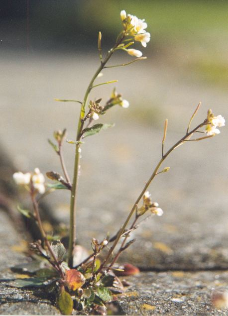

RNA-seq analysis
In this tutorial we will learn the basic steps involved in an RNA-seq analysis.
Specifically we will focus on two major steps:
- quantifying transcript expression
- differential expression analysis
Initial setup
You should have a folder on your desktop called RNA.
It contains the data for this workshop. The first thing we will do is organise the files in this directory.
Open up a terminal. Now copy and paste the following commands into the terminal:
cd ~/RNA
mkdir analysis data plots software
mkdir data/salmon data/metadata data/reads data/reference
mv Arabidopsis* data/reference
mv Salmon* software
mv SRR* data/reads
The dataset
We will use data from a study uploaded to ArrayExpress in February 2016. It looked at expression in Arabidopsis thaliana plants that had their PMP/PNP oxidase PDX3 genes knocked out, compared to wild-type plants with the gene intact.
The experiment is described by the authors as follows:
Arabidopsis mutants in the PMP/PNP oxidase PDX3 show abberant growth and development.RNA sequencing reveals strong induction of stress-related genes in pdx3, particularly those associated with biotic stress. Whole rosettes (21- days old) of three biological replicates of wild-type and pdx3-3 (SALK_054167C) and pdx3-4 (GK-260E03) mutants, all ecotype Col-0, were sequenced and a differential gene expression analysis was performed.
Some things here may be unfamiliar to you:
- Arabidopsis thaliana is the most well studied model plant species. It has a relatively small genome, a 6-week life cycle, and can be easily mutated, transformed and manipulated. It is usually called simply 'arabidopsis'.
pdx3-3andpdx3-4refer to mutant plant lines in which thepdx3gene is interrupted with a TDNA insertion.SALK_054167CandGK-260E03are the database identifiers of mutants ordered from a mutant seed collection.

Arabidopsis thaliana
Our analysis
We will re-analyse the raw read data from the experiment described above.
Specifically we will:
- quantify expression for each sample
- do some basic quality control on the resulting expression estimates
- run a differential expression anaysis to identify genes expressed differently in the mutants compared to the wild-type plants